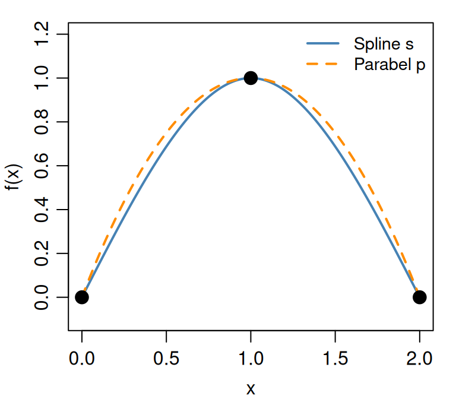
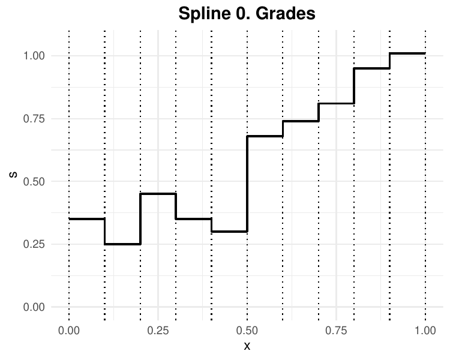
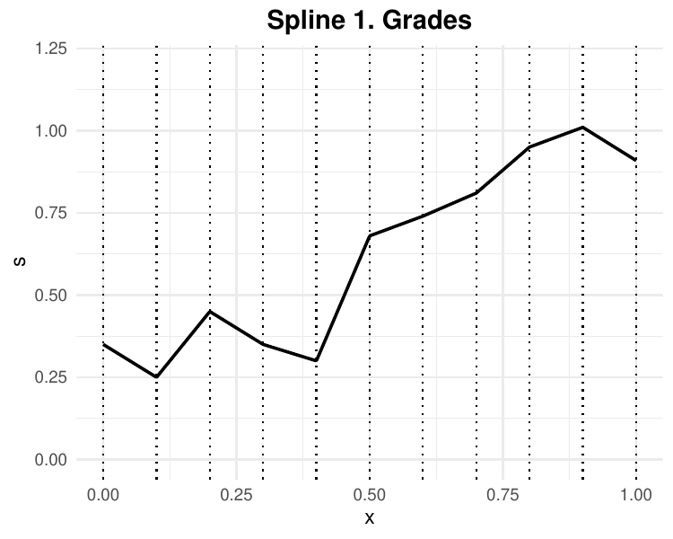
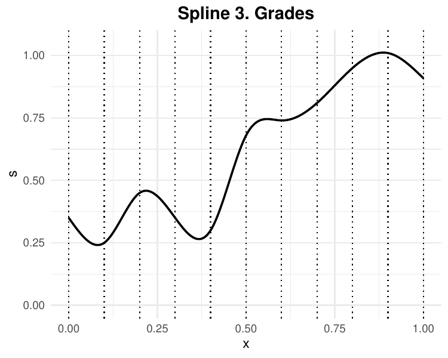
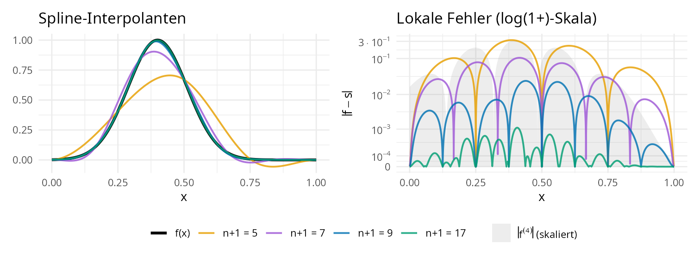
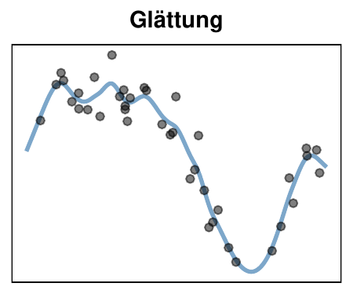
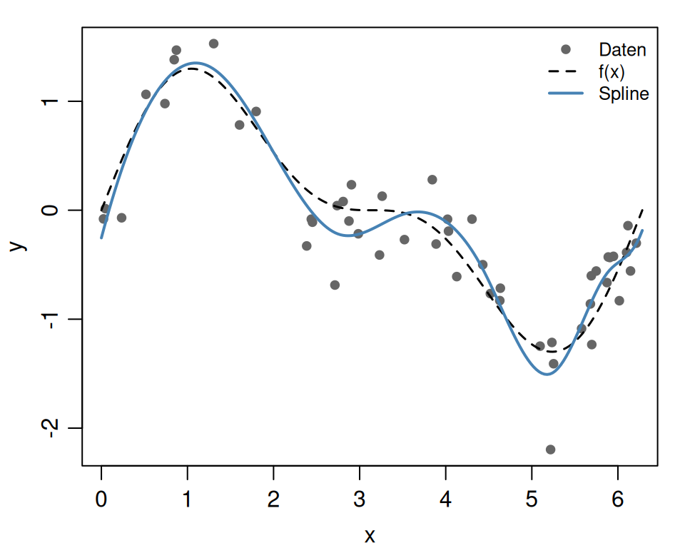
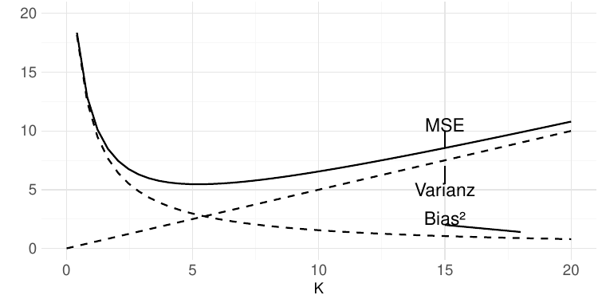
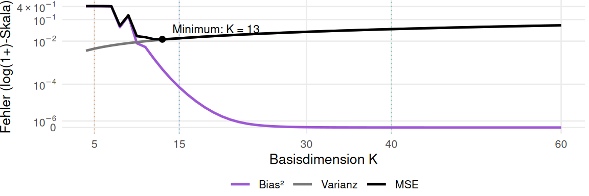
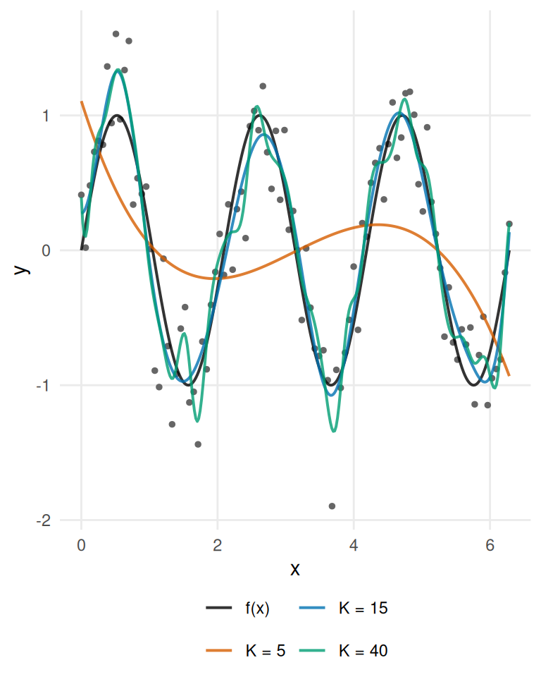

Fortgeschrittene mathematische Methoden in der Statistik
fabian.scheipl@lmu.de)\[ \definecolor{fmmgreen}{RGB}{0,158,115} \definecolor{fmmblue}{RGB}{0,114,178} \definecolor{fmmred}{RGB}{213,94,0} \definecolor{fmmorange}{RGB}{230,159,0} \definecolor{fmmpurple}{RGB}{158,87,213} \newcommand{\ind}{\unicode{x1D7D9}} \newcommand{\R}{{\mathbb{R}}} \newcommand{\N}{{\mathbb{N}}} \newcommand{\Q}{{\mathbb{Q}}} \newcommand{\C}{\mathbb{C}} \newcommand{\P}{\mathbb{P}} \newcommand{\Z}{{\mathbb{Z}}} \newcommand{\E}{{\mathbb{E}}} \newcommand{\K}{{\mathbb{K}}} \newcommand{\L}{\mathbb{L}} \newcommand{\F}{{\mathbb{F}}} \newcommand{\G}{\mathbb{G}} \newcommand{\S}{\mathbb{S}} \newcommand{\D}{{\mathbb{D}}} \newcommand{\bnull}{{\boldsymbol{0}}} \newcommand{\bzero}{{\boldsymbol{0}}} \newcommand{\ba}{{\boldsymbol{a}}} \newcommand{\bb}{{\boldsymbol{b}}} \newcommand{\bc}{{\boldsymbol{c}}} \newcommand{\bd}{{\boldsymbol{d}}} \newcommand{\be}{{\boldsymbol{e}}} \newcommand{\bg}{{\boldsymbol{g}}} \newcommand{\bh}{{\boldsymbol{h}}} \newcommand{\bi}{{\boldsymbol{i}}} \newcommand{\bj}{{\boldsymbol{j}}} \newcommand{\bk}{{\boldsymbol{k}}} \newcommand{\bl}{{\boldsymbol{l}}} \newcommand{\bn}{{\boldsymbol{n}}} \newcommand{\bo}{{\boldsymbol{o}}} \newcommand{\bp}{{\boldsymbol{p}}} \newcommand{\bq}{{\boldsymbol{q}}} \newcommand{\br}{{\boldsymbol{r}}} \newcommand{\bs}{{\boldsymbol{s}}} \newcommand{\bt}{{\boldsymbol{t}}} \newcommand{\bu}{{\boldsymbol{u}}} \newcommand{\bv}{{\boldsymbol{v}}} \newcommand{\bw}{{\boldsymbol{w}}} \newcommand{\bx}{{\boldsymbol{x}}} \newcommand{\by}{{\boldsymbol{y}}} \newcommand{\bz}{{\boldsymbol{z}}} \newcommand{\bA}{{\boldsymbol{A}}} \newcommand{\bB}{{\boldsymbol{B}}} \newcommand{\bC}{{\boldsymbol{C}}} \newcommand{\bD}{{\boldsymbol{D}}} \newcommand{\bE}{{\boldsymbol{E}}} \newcommand{\bF}{{\boldsymbol{F}}} \newcommand{\bG}{{\boldsymbol{G}}} \newcommand{\bH}{{\boldsymbol{H}}} \newcommand{\bI}{{\boldsymbol{I}}} \newcommand{\bJ}{{\boldsymbol{J}}} \newcommand{\bK}{{\boldsymbol{K}}} \newcommand{\bL}{{\boldsymbol{L}}} \newcommand{\bM}{{\boldsymbol{M}}} \newcommand{\bN}{{\boldsymbol{N}}} \newcommand{\bO}{{\boldsymbol{O}}} \newcommand{\bP}{{\boldsymbol{P}}} \newcommand{\bQ}{{\boldsymbol{Q}}} \newcommand{\bR}{{\boldsymbol{R}}} \newcommand{\bS}{{\boldsymbol{S}}} \newcommand{\bT}{{\boldsymbol{T}}} \newcommand{\bU}{{\boldsymbol{U}}} \newcommand{\bV}{{\boldsymbol{V}}} \newcommand{\bW}{{\boldsymbol{W}}} \newcommand{\bX}{{\boldsymbol{X}}} \newcommand{\bY}{{\boldsymbol{Y}}} \newcommand{\bZ}{{\boldsymbol{Z}}} \newcommand{\tagqed}{\tag*{$\blacksquare$}} \newcommand{\Acal}{{\mathcal{A}}} \newcommand{\Bcal}{{\mathcal{B}}} \newcommand{\Ccal}{{\mathcal{C}}} \newcommand{\Dcal}{{\mathcal{D}}} \newcommand{\Ecal}{{\mathcal{E}}} \newcommand{\Fcal}{{\mathcal{F}}} \newcommand{\Gcal}{{\mathcal{G}}} \newcommand{\Hcal}{{\mathcal{H}}} \newcommand{\Ical}{{\mathcal{I}}} \newcommand{\Jcal}{{\mathcal{J}}} \newcommand{\Kcal}{{\mathcal{K}}} \newcommand{\Lcal}{{\mathcal{L}}} \newcommand{\Mcal}{{\mathcal{M}}} \newcommand{\Ncal}{{\mathcal{N}}} \newcommand{\Ocal}{{\mathcal{O}}} \newcommand{\Pcal}{{\mathcal{P}}} \newcommand{\Qcal}{{\mathcal{Q}}} \newcommand{\Rcal}{{\mathcal{R}}} \newcommand{\Scal}{{\mathcal{S}}} \newcommand{\Tcal}{{\mathcal{T}}} \newcommand{\Ucal}{{\mathcal{U}}} \newcommand{\Vcal}{{\mathcal{V}}} \newcommand{\Wcal}{{\mathcal{W}}} \newcommand{\Xcal}{{\mathcal{X}}} \newcommand{\Ycal}{{\mathcal{Y}}} \newcommand{\Zcal}{{\mathcal{Z}}} \newcommand{\eps}{{\varepsilon}} \newcommand{\beps}{{\boldsymbol{\epsilon}}} \newcommand{\balpha}{{\boldsymbol{\alpha}}} \newcommand{\bbeta}{{\boldsymbol{\beta}}} \newcommand{\bchi}{{\boldsymbol{\chi}}} \newcommand{\bdelta}{{\boldsymbol{\delta}}} \newcommand{\bDelta}{{\boldsymbol{\Delta}}} \newcommand{\bepsilon}{{\boldsymbol{\epsilon}}} \newcommand{\bphi}{{\boldsymbol{\phi}}} \newcommand{\bgamma}{{\boldsymbol{\gamma}}} \newcommand{\betah}{{\boldsymbol{\eta}}} \newcommand{\btheta}{{\boldsymbol{\theta}}} \newcommand{\biota}{{\boldsymbol{\iota}}} \newcommand{\bkappa}{{\boldsymbol{\kappa}}} \newcommand{\blambda}{{\boldsymbol{\lambda}}} \newcommand{\bLambda}{{\boldsymbol{\Lambda}}} \newcommand{\bmu}{{\boldsymbol{\mu}}} \newcommand{\bnu}{{\boldsymbol{\nu}}} \newcommand{\bomikron}{{\boldsymbol{\omicron}}} \newcommand{\bpi}{{\boldsymbol{\pi}}} \newcommand{\bSigma}{{\boldsymbol{\Sigma}}} \newcommand{\bxi}{{\boldsymbol{\xi}}} \newcommand{\bzeta}{{\boldsymbol{\zeta}}} \newcommand{\bomega}{{\boldsymbol{\omega}}} \newcommand{\equivto}{{\Leftrightarrow}} \newcommand{\quequiv}{{\quad \equivto \quad}} \newcommand{\impl}{{\implies}} \newcommand{\quimpl}{{\quad \implies \quad}} \newcommand{\implby}{{\impliedby}} \newcommand{\notimplies}{\not\implies} \newcommand{\tr}{{\operatorname{tr}}} \newcommand{\spann}{{\operatorname{span}}} \newcommand{\col}{{\operatorname{col}}} \newcommand{\rang}{{\operatorname{rang}}} \newcommand{\diag}{{\operatorname{diag}}} \newcommand{\vec}{\operatorname{vec}} \newcommand{\pinv}{{^{+}}} \newcommand{\kron}{\mathbin{\otimes_{\mathrm{K}}}} \newcommand{\sign}{{\operatorname{sign}}} \newcommand{\la}{{\langle}} \newcommand{\ra}{{\rangle}} \newcommand{\inner}[1]{{\langle #1 \rangle}} \newcommand{\proj}{{\operatorname{proj}}} \newcommand{\bar}{\overline} \newcommand{\vol}{{\operatorname{vol}}} \newcommand{\dx}{{\, \mathrm{d}x}} \newcommand{\ol}{{\overline}} \newcommand{\argmax}{\mathop{\mathrm{arg\,max}}} \newcommand{\argmin}{\mathop{\mathrm{arg\,min}}} \newcommand{\conv}{\mathop{\mathrm{conv}}} \newcommand{\epi}{\mathop{\mathrm{epi}}} \newcommand{\interior}{\mathop{\mathrm{int}}} \newcommand{\Pr}{\mathbb{P}} \newcommand{\var}{{\mathbb{V}\mathrm{ar}}} \newcommand{\bias}{{\operatorname{bias}}} \newcommand{\abias}{{\mathrm{ABias}}} \newcommand{\AMSE}{{\mathrm{AMSE}}} \newcommand{\AMISE}{{\mathrm{AMISE}}} \newcommand{\cov}{{\mathbb{C}\mathrm{ov}}} \newcommand{\corr}{{\mathrm{Corr}}} \newcommand{\ov}{{\overline}} \newcommand{\wh}[1]{{\widehat{#1}}} \newcommand{\wt}[1]{{\widetilde{#1}}} \newcommand{\tod}{{\stackrel{d}{\to}}} \newcommand{\sumin}{{\sum_{i = 1}^n}} \newcommand{\sumjn}{{\sum_{j = 1}^n}} \newcommand{\KL}{{\operatorname{KL}}} \newcommand{\softmax}{{\operatorname{SoftMax}}} \newcommand{\layernorm}{{\operatorname{LayerNorm}}} \newcommand{\avg}{{\operatorname{avg}}} \newcommand{\relu}{{\operatorname{ReLu}}} \newcommand{\VC}{{\operatorname{VC}}} \newcommand{\indep}{{\perp \!\!\! \perp}} \newcommand{\unif}{{\operatorname{Unif}}} \newcommand{\bern}{{\operatorname{Bernoulli}}} \newcommand{\binomial}{{\operatorname{Binomial}}} \newcommand{\MSE}{{\operatorname{MSE}}} \newcommand{\iid}{\textit{iid}\;} \newcommand{\IF}{{\operatorname{IF} }} \newcommand{\BIC}{{\operatorname{BIC}}} \newcommand{\AIC}{{\operatorname{AIC}}} \newcommand{\IC}{{\operatorname{IC}}} \newcommand{\expl}[1]{{\tag*{[#1]}}} \newcommand{\cb}[1]{\textbf{#1}} \newcommand{\cbgreen}[1]{\textcolor{fmmgreen}{\textbf{#1}}} \newcommand{\cbred}[1]{\textcolor{fmmred}{\textbf{#1}}} \newcommand{\cbpurp}[1]{\textcolor{fmmpurple}{\textbf{#1}}} \newcommand{\cborange}[1]{\textcolor{fmmorange}{\textbf{#1}}} \newcommand{\corange}[1]{{\textcolor{fmmorange}{#1}}} \newcommand{\cblue}[1]{{\textcolor{fmmblue}{#1}}} \newcommand{\cgreen}[1]{{\textcolor{fmmgreen}{#1}}} \newcommand{\cred}[1]{{\textcolor{fmmred}{#1}}} \newcommand{\cpurp}[1]{{\textcolor{fmmpurple}{#1}}} \newcommand{\symbf}[1]{\boldsymbol{#1}} \]
Frage 1:
Was bedeutet \(f \in \mathcal C^4[a, b]\)?
Frage 2:
Sei \(\bB \in \R^{n \times K}\) mit vollem Spaltenrang (\(K < n\)). Die KQ-Lösung von \(\min_{\ba} \left\| \by - \bB \ba \right\|_2^2\) ist …
Erinnerung: Ein Spline vom Grad \(q\) ist eine Funktion, die Polynome an den Punkten \(\xi_1, \dots, \xi_{m - 1}\) glatt zusammensetzt: dort stimmen alle Ableitungen bis zur Ordnung \(q - 1\) überein, d.h. \(s \in \mathcal C^{q - 1}\).



Kubische Splines erzeugen besonders einfache “glatte” Kurven.
Das ist kein Zufall:
Man kann sie herleiten, indem man Interpolanden mit minimaler Krümmung sucht (diese Eigenschaft hat auf englisch auch den schönen Namen minimal wiggliness).
Theorem: Kubische Splines haben minimale Krümmung
Seien \((x_1, y_1), \dots, (x_n, y_n) \in [a, b] \times \R\) mit \(a = x_1 < x_2 < \dots < x_n = b\)
und \(s\) ein natürlicher kubischer Spline, der diese Punkte interpoliert (d.h. mit \(s''(a) = s''(b) = 0\)).
Sei \(g \in \mathcal C^{2}[a, b]\) eine weitere Funktion mit \(g(x_i) = y_i \quad \forall i\).
Dann gilt: \[\begin{align*} \int_a^b \left|s''(x)\right|^2 dx \le \int_a^b \left|g''(x)\right|^2 dx. \end{align*}\]
“Krümmung” meint hier \(\int_a^b \left|f''(x)\right|^2 dx\), nicht das Integral der geometrischen Krümmung \(\kappa = \left|f''\right| \big/ \left(1 + (f')^2\right)^{3/2}\) — beide fallen nur für flache Kurven mit \(\left|f'\right| \ll 1\) zusammen. Der Name ist trotzdem eingebürgert.
Sei \(s\) der natürliche kubische Spline-Interpolant zu \(\left(x_i,y_i\right)\).
Für einen anderen Interpolanten \(g\in \mathcal C^2\) setze \(g = s + h\) mit \(h\left(x_i\right)=0\ \forall i\).
Sei \(J\left(g\right) := \int_a^b \left(g''\left(x\right)\right)^2dx\). Dann gilt \[
J\left(g\right)=J\left(s\right)+\cgreen{2\int_a^b s''\left(x\right)h''\left(x\right)dx}+\int_a^b \left(h''\left(x\right)\right)^2 dx.
\] Auf jedem Intervall \(\left[x_{i-1},x_i\right]\), \(i = 2, \dots, n\), gilt durch partielle Integration \[
\cgreen{\int s'' h''dx}
=\cred{\left[s''h'-s^{(3)}h\right]_{x_{i-1}}^{x_i}}
+\cred{\int s^{(4)}hdx}.
\]
\[\implies J\left(g\right)=J\left(s\right)+\int_a^b \left(h''\left(x\right)\right)^2dx \ \ge\ J\left(s\right) \implies \text{Gleichheit nur für } h\equiv 0. \tagqed \]
Letzter Schritt:
Gleichheit heißt \(\int_a^b \left(h''\right)^2dx = 0\), also \(h'' \equiv 0\) (\(h''\) ist stetig), also \(h\) affin;
da \(h\) an den \(n \ge 2\) Stellen \(x_i\) verschwindet, folgt \(h \equiv 0\) \(\implies\) Der Spline \(s\) ist der einzige Minimierer.
Gegeben:
Punkte \((0, 0)\), \((1, 1)\), \((2, 0)\)
Natürlicher kubischer Spline:
\[\cblue{s(x)} = \begin{cases}
\tfrac{3}{2}x - \tfrac{1}{2}x^3 & x < 1 \\
\tfrac{3}{2}(2-x) - \tfrac{1}{2}(2-x)^3 & x \geq 1
\end{cases}\]
\(\cblue{s''(x) = -3x}\) bzw. \(\cblue{s''(x) = -3(2-x)}\) \(\impl s''(0) = s''(2) = 0\) \(\checkmark\)
Vergleich mit Parabel:
\[\corange{p(x) = -x^2 + 2x}\]
| Interpolant | \(\int_0^2 \left|f''(x)\right|^2 dx\) |
|---|---|
| Spline \(\cblue{s}\) | \(\cblue{6}\) |
| Parabel \(\corange{p}\) | \(\corange{8}\) |
\(\impl\) Spline hat kleinere Krümmung!

Theorem: Approximationsfehler kubischer Splines
Sei \(a = x_0 < x_1 < \dots < x_n = b\) eine Partition mit Gitterweite \(h := \max_i\left|x_i - x_{i - 1}\right|\).
Für jedes \(f \in \mathcal C^{4}[a, b]\) sei \(s\) der eindeutig bestimmte eingespannte kubische Spline-Interpolant mit \[\begin{align*}
f(x_i) = s(x_i) \; \forall i, \qquad s'(a)=f'(a), \qquad s'(b)=f'(b).
\end{align*}\] Dann gilt \[\max_{x \in [a, b]} \left| f(x) - s(x) \right| \le \frac{5}{384} h^4 \max_{x \in [a, b]} \left| f^{(4)}(x)\right|.\]
Erkenntnisse:
Gegeben:
\(f(x) = \exp\!\left(-40\left(x - \tfrac25\right)^2\right)\) auf \([0, 1]\) mit \(\max \left|f^{(4)}(x)\right| = 19200\) (am schmalen Peak \(x=\tfrac25\), der kein Knoten ist)

Beobachtung:
Mit nur fünf Knoten ist die Abweichung deutlich sichtbar. Sie konzentriert sich um den schmalen Peak, wo \(\left|f^{(4)}\right|\) groß ist; an den Knoten selbst ist der Interpolationsfehler natürlich null.
| Knoten \(n+1\) | Gitterweite \(h\) | Fehlerschranke \(\frac{5}{384}h^4\max_x|f^{(4)}(x)|\) | Tatsächlicher Fehler \(\max_x|f(x)-s(x)|\) |
|---|---|---|---|
| \(\corange{5}\) | \(\corange{0.25}\) | \(\corange{\approx 0.977}\) | \(\corange{\approx 0.324}\) |
| \(\cpurp{7}\) | \(\cpurp{0.1667}\) | \(\cpurp{\approx 0.193}\) | \(\cpurp{\approx 0.1048}\) |
| \(\cblue{9}\) | \(\cblue{0.125}\) | \(\cblue{\approx 0.061}\) | \(\cblue{\approx 0.0239}\) |
| \(\cgreen{17}\) | \(\cgreen{0.0625}\) | \(\cgreen{\approx 0.0038}\) | \(\cgreen{\approx 0.00111}\) |
Beobachtung:
Berechnet für den eingespannten Spline-Interpolanten aus dem Theorem, also mit \(s'(0)=f'(0)\) und \(s'(1)=f'(1)\).

Modell:
\[y_i = f(x_i) + \epsilon_i, \qquad \epsilon_i \text{ i.i.d.} \quad \text{mit } \E[\epsilon_i | x_i] = 0.\]
Problem:
Finde eine Funktion \(\wh{f}\) mit kleinem Fehler \[\sum_{i = 1}^n \left(y_i - \wh{f}(x_i)\right)^2.\]
Über alle Funktionen ist dieses Minimum \(0\) und wird von jedem Interpolanten angenommen (davon gibt es unendlich viele; siehe Kapitel Funktionsapproximation I) \(\to\) entartetes Problem.
Wir brauchen eine Einschränkung des Suchraums!
Unterschied zu Interpolation:
Interpolation (\(K = n\)):
Glättung (\(K < n\)):
Wann welche Methode?
| Situation | Methode |
|---|---|
| Präzise, rauschfreie Daten | Interpolation |
| Verrauschte Messungen | Glättung |
| Vorhersage für neue Daten | Glättung |
set.seed(42)
n <- 50
x <- sort(runif(n, 0, 2 * pi))
f_true <- function(x) sin(x) + 0.5 * sin(2 * x)
y <- f_true(x) + rnorm(n, sd = 0.3)
# Designmatrix: B-Spline-Basis, K = 10
B <- splines::bs(x, df = 10, intercept = TRUE,
Boundary.knots = c(0, 2 * pi))
a_hat <- qr.solve(B, y) # KQ via QR
#! äquivalent:
#! Q * R * a = y --> R * a = Q^T * y --> a = R^- * Q^T * y
#! qrB <- qr(B)
#! a_hat <- backsolve(qr.R(qrB), t(qr.Q(qrB)) %*% y)
# Auswertung auf neuen Punkten
x_new <- seq(0, 2 * pi, length = 200)
B_new <- splines::bs(x_new,
knots = attr(B, "knots"),
Boundary.knots = attr(B, "Boundary.knots"),
intercept = TRUE)
f_hat <- B_new %*% a_hat
Annahme: gleichmäßige Knoten auf \([a,b]\), \(f \in \mathcal C^4\), kubische Splines
Annahme: $\(\var[\epsilon_i] = \sigma^2 \;\forall\, i \text{(homoskedastisch)}\)*
Exakt ist das im Mittel über die Designpunkte: \(\frac{1}{n}\sum_{i=1}^n \var\left[\wh{f}(x_i)\right] = \sigma^2 K/n\) (Spur der Hatmatrix \(= K\), falls \(\bB\) vollen Spaltenrang hat); punktweise braucht die Rate Zusatzannahmen an Knoten und Design.
Think–Pair–Share (2 Minuten, mit Sitznachbar:in):
\(\to\) Auflösung im folgenden Abschnitt zum Bias-Varianz-Trade-off.

\[\E\left[\left(\wh{f}(x) - f(x)\right)^2\right] = O(K^{-8} + K/n)\]
Setup:
\(f(x) = \sin(3x)\), \(n = 100\), \(\sigma = 0.3\)
| Modell | \(K\) | Bias² | Var | MSE |
|---|---|---|---|---|
| Unteranpassung | \(5\) | 0.416 | \(0.005\) | \(0.421\) |
| Nahezu optimal | \(15\) | \(0.000\) | \(0.014\) | \(0.014\) |
| Überanpassung | \(40\) | \(0.000\) | 0.036 | \(0.036\) |
(Bias² und Varianz exakt berechnet für den KQ-Fit, gemittelt über äquidistante Designpunkte; \(\text{Var} = \sigma^2 K / n\))
Interpretation:
Über \(K \in {4, \dots, 60}\)


Problem:
Wir kennen \(f\) nicht, also wissen wir nicht, ob \(K\) optimal ist!
Mögliche Ansätze:
Praktisch verwendeter Ansatz:
mgcv::gam()Zur Approximation von multivariaten \(f\colon \R^p \to \R\) kann man eine Tensor-Produkt-Basis bilden (vgl. Tensorproduktbasen im Kapitel Tensoren): \[\begin{align*} \wh{f}(\bx) = \sum_{j_1 = 1}^{K} \cdots \sum_{j_p = 1}^{K} a_{j_1, \dots, j_p} \left(\phi_{j_1}(x_1) \times \cdots \times \phi_{j_p}(x_p)\right) \end{align*}\] mit Koeffizienten \[\bA = (a_{j_1, \dots, j_p})_{j_i = 1, \dots, K, i = 1, \dots, p} \in \R^{K \times \cdots \times K}.\]
\(\bA\) kann wieder durch Lösung eines gewöhnlichen KQ-Problems gefunden werden.
Aber: Fluch der Dimensionalität
\(\impl\) sehr langsam für großes \(p\).
Szenario: \(f\colon \R^p \to \R\) mit \(K = 10\) Basisfunktionen pro Dimension
Speicher:
| Dim. \(p\) | Koeffizienten \(K^p\) | Speicher |
|---|---|---|
| 1 | 10 | 80 Bytes |
| 2 | 100 | 800 Bytes |
| 3 | \(1\,000\) | 8 kB |
| 5 | \(100\,000\) | 800 kB |
| 10 | \(10^{10}\) | \({\color{red}80 \text{ GB}}\) |
Dezimale Präfixe: 1 kB \(=10^3\) Bytes, 1 GB \(=10^9\) Bytes.
Konvergenz (optimales \(K \sim n^{1/(8+p)}\)):
| Dim. \(p\) | Konvergenzrate | \(n\) für MSE \(\le 0.01\) |
|---|---|---|
| 1 | \(n^{-8/9}\) | \(\approx 180\) |
| 2 | \(n^{-0.8}\) | \(\approx 320\) |
| 5 | \(n^{-8/13}\) | \(\approx 1\,800\) |
| 10 | \(n^{-8/18}\) | \({\color{red}\approx 32\,000}\) |
illustrative Werte — entscheidende Konstanten sind problemabhängig
\(\impl\) Speicherbedarf und Datenbedarf wachsen exponentiell mit \(p\)!
Problem:
Tensor-Produkt mit \(K^p\) Parametern für \(p > 3\) unpraktikabel
Lösungsansatz:
Benutze additive Struktur statt vollem Tensor-Produkt:
Statt \[\wh{f}(\bx) = \sum_{j_1=1}^K \cdots \sum_{j_p=1}^K a_{j_1,\dots,j_p} \prod_{i=1}^p \phi_{j_i}(x_i) \quad \text{(}K^p\text{ Koeffizienten)}\]
verwende Generalisiertes Additives Modell (GAM): \[\wh{f}(\bx) = \beta_0 + \sum_{i=1}^p f_i(x_i) \quad \text{(}pK + 1\text{ Koeffizienten)}\]
Genauer:
\(pK + 1\) Koeffizienten, wegen Identifizierbarkeit (\(f_i\) sind nur bis auf additive Konstanten bestimmt) nur \(p(K - 1) + 1\) frei wählbar — Größenordnung \(O(pK)\).
Aber:
rein additiv — Interaktionseffekte (z.B. \(f(x_1, x_2) = x_1 \cdot x_2\)) werden nicht erfasst; dafür: zusätzliche niedrigdimensionale Tensorprodukt-Terme.
Vorteile:
mgcv::gam() mit automatischer GlättungsparameterwahlMehr zu
in Thomas Naglers Vorlesungen:
Mehr zu GAMs & co in Statistik V: Konzepte Statistischer Modellierung (BSc)
Frage 1: Unter allen Interpolanten \(g \in \mathcal C^2[a,b]\) der Punkte \((x_i, y_i)\) …
Frage 2: Wir verdoppeln die Anzahl der Basisfunktionen \(K\) (bei festem \(n\)). Dann gilt (asymptotisch):
Frage 3: Was bedeutet die “optimale Wahl” \(K \sim n^{1/9}\)?
Heute gelernt
Finito!